New Tabular Testflow Tool in the SmarTest Work Center
Jianping Yan, Verigy
Alan Lin, Verigy
Paper ID: 106164
Abstract
The current Testflow tool of SmarTest graphically presents flow information. It is intuitive for users to create test sequences with complex conditions. However, it is tedious to edit and debug the test conditions of each test or to compare several tests.
A new Testflow tool, which consists of several plug-ins for the Eclipse work center, takes full advantages of the powerful Eclipse framework. It works closely and collaboratively with other tools to provide an efficient and integrated approach for user to interact with the V93000 system. Specifically, this includes the integration with the Eclipse C/C++ development environment for test methods as well as the editor dedicated to parameterize the test method selected for a test.
The new Testflow tool will introduce a tabular representation of the test flow. It will provide direct editing and a quick overview of the test conditions for test elements. It builds on the concepts of a spreadsheet, but benefits from the tight integration into an IDE dedicated to ATE test program development.
The new Testflow tool has a variety of views to present a testflow file. Rather than demanding users to request information in a context-dependent dialog, the information is readily available in a particular view. This idea prevails in some modern IDEs, such as Visual Studio .Net and C++ Builder and it is proven as an efficient and productive approach to programming.
Introduction
The new Testflow tool aims at improving V93000 user productivity for shorter Timing-To-Market and Timing-To-Volume. It will be integrated into Eclipse Working Center for creating, viewing, editing and debugging test programs.
Different Views Methodology to represent a file is widely used in some well-known integrated development environment and it's proved as an efficient and productive approach to programming. Current test program tools only applied one view which obviously has limitations during whole life cycle of a test program. It's time to retrofit current Testflow tool through introducing this methodology into test program programming.
For the new Testflow tool in 6.3 release, it will provide users with two views in Eclipse Working Center: Tabular View and Test Suite View. The current graphical view will remain in the legacy world and it will be integrated in Eclipse Working Center in the near future. Different views have different strength, for example, graphical view is used for creating flow information while tabular view provides a more convenient way for users to edit and debug test program.
The new tool emphasizes the interaction within plug-ins. For example, Test Suite View plug-in, one of plug-ins in the new tool, shows selected test suite reflected in Editor Plug-in which overviews the whole test program. The selected information showed in Test Suite View can facilitate reading and editing.
With effective plug-ins provided by the new Tool, users can also enjoy flexibilities of the Framework, for example, Detailed View Plug-in provides lots of functions for users to edit specific properties of the selected test suite, especially on test method parameters and limits.
The new Testflow Tool also enforces interactions with Test Program Explorer. A new use model is being introduced to meet Verigy usability goal. Some usability concepts will be also introduced to make this tool more powerful, useful as well as streamline.
This paper will introduce the new test flow tool with the focus on the tabular view of the tool. It will clarify its goals as well as present its major capabilities as they apply at various stages of the test program development and debug cycle. Specifically, the paper will highlight the integration of the tool in its environment - including the role of the tabular vs. graphical representation.
Problem Description
Following are some problems customers currently facing.
- It is very time consuming to find what kind of test resources used in each test suite especially with testflow setup containing many test suites. User has to open up individual test suite and many windows/dialogs to find and edit setups. The solution is to allow for tabular way of listing, editing and executing Test Flow.
- Another problem which affects the productivity is that tools for test program generation are in different platforms. For example, while the testflow editor is still x-motif based, the test method debugger tool is in the SmarTest Work Center. As a result, customers, application engineers and test engineers are hard to use the tool. The new tool will be developed in the Eclipse integrated environment and it will utilize both graphical and tabular views as representations of the same testflow. In addition, a third view named Test Suite view will be provided to user to show the property of the test suite selected in either the tabular test list view or in the graphical view. It's good to be able to view/edit/debug individual test suite while still can get overview of test resources used for all the test suites. Users have full flexibility to choose the views they want to use. It should be noted that the graphical testflow view will remain in the legacy world in 6.3 release. However, alignment feature will be provided to easily locate the same test suite from tabular testflow view to the current graphical testflow editor and vice versa.
- It's hard to exchange data with external tools. New tool will provide import/export functionalities as well for user easily exchanging data with well-known third-party tools. It's very convenient to generate/convert to test program from chip design specifications which are typically expressed in those well-known third-party tools.
Overview of the New Tool
Major capabilities of the Tabular Testflow tool.
First of all, the tabular view is en extension of the existing graphical testflow tool instead of the replacement of the existing testflow GUI.
- It uses the same testflow file as for the graphical view.
- It allows for tabular way of listing, comparing and editing test resources.
- It dramatically improves the usability of the test development tool by having less number of windows and more intuitive GUI design.
- It enables execution of whole testflow as well as selected test suites execution. User can view the execution results in the Tabular Testflow view.
- It provides facilities to exchange data with outside world due to tabular representation of itself.
General layout of the new tool in Eclipse
At the first phase of the program, two views can be seen when the new tool is opened in Eclipse from TPE (Test Program Explorer), Tabular Testflow view and Test Suite View. The graphical view will remain in the legacy world. However, alignment feature will be provided to facilitate user to switch from Tabular Testflow view to the current graphical view easily and vise versa. Using the alignment feature, a test suite selected from the Tabular Testflow view can be easily mapped to the same test suite displayed in the Graphical view. As you will see in the Future Direction section, a third view, graphical view will be integrated into Eclipse center in the second phase of the program. The content of the Test Suite View refers to the Test Suite property in focus. Tabular testflow view has several pages (Test List, Test Tree, Limits, Parameters, Flags, Variables, Bins, Setups, Information). The default page of the Tabular Testflow is the test list.
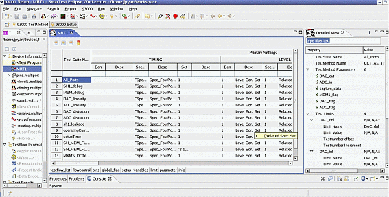
Tabular Testflow view
Test List Page
The test list page includes the test suite name column, primary setups section, test setups section and result display section, test suite flag setups section. The primary setups are displayed with the columns like below.
- Level setup columns
- LevEqnSet, LevSpec/DPSSet, and LevSet
- Timing setup columns
- TimEqnSet, TimSpec/WaveformSet, Waveform Table and TimSet
- AnalogSet column
- VectorLabel column
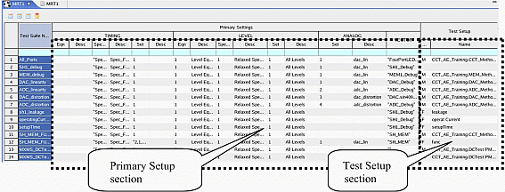
For Test Setup section, there are TestType, Test Action. Column Test Setup will show if it is a test function, user procedure or test method. For test function,it will display the name of the test function. For test method, it will show TestMethodLib.TestMethodProject.TestMethod. For user procedure, it will show the relevant user procedure name and parameters. For example, init a b c would be the way to call the user procedure init, with its associated parameters, a, b and c.
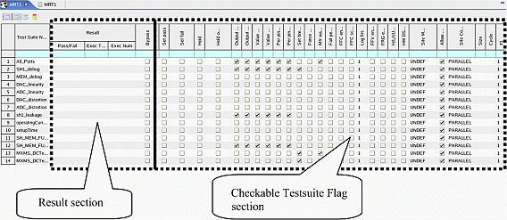
Result Display section includes Pass/Fail column, TotalExecTime, AvgExecTime column, ExecNum column and Fail Bin column. It should be noted, the Tabular Testflow tool is not committed to support to display Fail Bin information in 6.3 release. Result information can also be indicated with different color background/borderline.
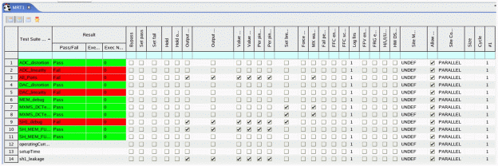
Test Tree page
Test tree page includes the flow control information. It also includes the test suite flag setups section, primary setups section, test setups section and result display section as described in the test list page.
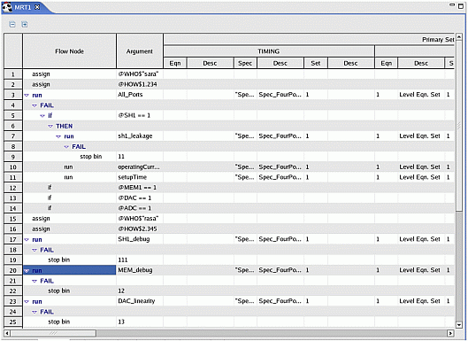
Flags page
Flags page (Figure 5) includes flags column and Value column. Both System flags and Testflow flags are shown here, System flags define global information, relevant to the whole of the test, while the testflow flags primarily help user to debug the testflow.
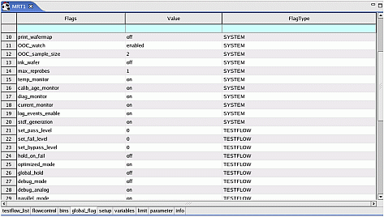
Variables page
Variables page (Figure 6) allows convenient handling of all variables in a testflow. Variables page allows user to define all variables used in testflow except the implicit variables. Variable page includes Type column, Name column, Value column, Current Value column and Category column,. Category column will be "Implicit " for variables defined in an Assign value icon in the testflow and will be empty for the rest of variables. In a testflow, you can use four different types of variables which may hold values as follows:
- Double - a double value or expression that represents a double value. Typically, such variables take result values of test suites.
- String - a string (given in double quotes, like "String")
- User flag - an integer value. A user flag variable can be viewed and edited during test program execution
- Implicit --any variable that is defined in an Assign Value icon in the testflow is of this type. Valid values for Implicit variables are the same as for Double and String. Defining a new variable in an Assign Value icon means that you use a variable name that has not been defined anywhere else before.
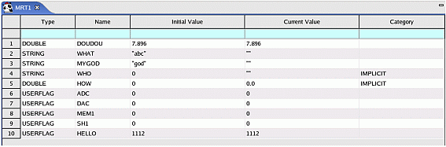
Bins page
Bins page (Figure 7) allows user to define the bin type bin - good or bad, and how the bin icon appears in the testflow (in the case of a stop bin) and in the test result display windows. The Bin page includes SW_bin, SW_bin_desc, HW_bin, HW_bin_desc, binning, bin_color, bin_reprobe, bin_over_on columns.
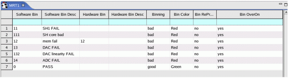
Limits page
Limits page (Figure 8) contains test method limit setup information for tests which test methods are used. One test suite can define more than one limit setup.
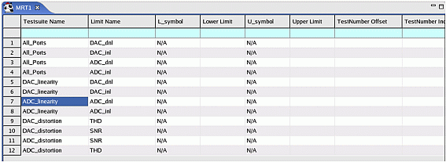
Parameters page
Parameter page (Figure 9) contains the parameter setup information for both test methods and test functions.
- For a test method, Action name is proj.class.method or proj.class ( for enhanced test methods) and then NameX, TypeXValueX for parameter name, type and value, respectively.
- For a test function, the Action Name will be the description of the test function, Name1 will be the function name and Value 1 will be detailed setting for that function.
- Parameter dependency defined in the enhanced test method will not be indicated in the table.
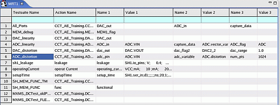
Setups page
Setups page (Figure 10) has Setup column and File (location) column. It allows user to select setup files. Setup column is not editable. It shows different setup tools. File column is editable and allows user to select setup files. Content assist also available for File column and invalid setup file will be highlighted.
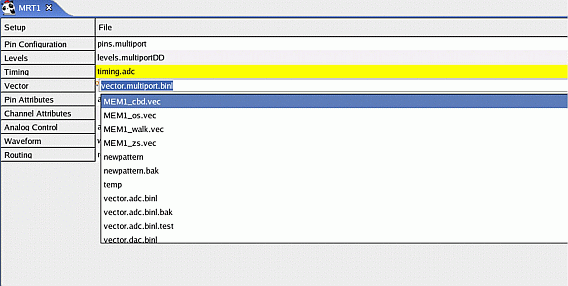
Test Suite view
It displays the property of a test suite in focus (either from the test list page, test tree page, limits page or parameters page) and contains all attributes for the test suite in the test list page, Limits and Parameters pages. Filter will be implemented in this view to ease of navigation and editing. The view is opened by default when the 93000 Setup perspective is opened and when the Tabular Testflow tool is not opened or the testflow is not loaded, there is no content for this view. It can be reopened from or it can be reopened when the tabular testflow is opened. As shown in Figure 11, the current parameter dialog window which is used to edit test method parameters and limits almost covers the whole window. In contrast (Figure 12), the test suite view provides space efficient way for editing test method parameters and limits. Content assist will be implemented to increase the usability of this view. In addition, it will supports extended ATE types of enhanced test methods (see reference 1).
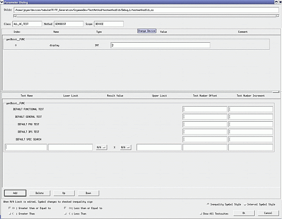
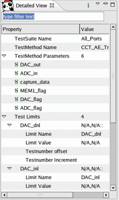
User interaction with system during execution
During execution, the Tabular Testflow tool (including the test suite View) is not editable. However, users can view different pages by clicking the tab for a different page in the Tabular Testflow. When execution on hold, user can change the flags (test suite flags, system and testflow flags, and variables). The changes of these flags will take into effect when the execution is resumed.
However, fields other than above mentioned are not editable until execution is complete.
Interaction with TPE and support for enhanced test methods
The tabular testflow tool will be opened by a new menu entry in the TPE (Test Program Explorer). In addition, in order to support the enhanced test method project, a new menu entry in TPE will be added to 'new' a testflow which is enhanced test method based (Figure 13). If a testflow file is successfully loaded, TPE also indicates whether an enhanced test method based testflow is loaded or not. TPE also indicates whether the testflow is modified since last save.
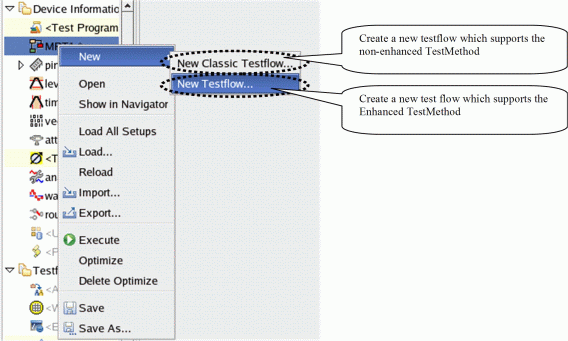
Color-coded error bar
Color-coded error bar will be used to indicate invalid testflow setups.
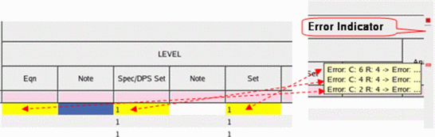
Preference Display
User can specify which column(s) to display or not to display in the Tabular Testflow view by using user preference dialog (Figure 16). User also can use predefined button bars on the testlist page or filter dialog in Test suite view to control which part in the test list and test suite views to view.
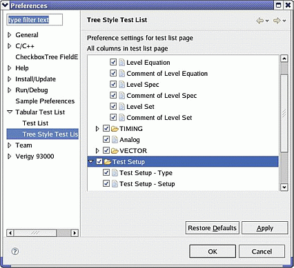
Sort/Filter
The tool provide options to sort the table ascending, descending, by order of execution, and in the default order. Combining this with execution time column, user can easily sort out worst case of test suites. It is easy to evaluate the testflow execution. The sort by the order execution and combined with filtering capability for pass/fail column, user can easily know which is next fail test or previous pass/failed test. User can also use filter to filter out uninterested information.
An enhancement of this tool is also on the results display. It will display pass/fail execution results on different sites.
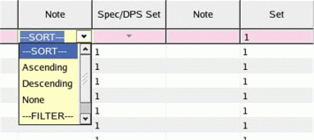
Advantages of using the new tool
Create a new testflow
While it is obvious that it is a disadvantage to use the tabular view to create a testflow control information, the tabular view will help users to easily and quickly setup test resources needed for each test suite once the flow control is established. Therefore, to create a new testflow from scratch, the recommended way is to use graphical view to create a flow control first. User can then use the test suite view or the tabular view to fill or edit test resources needed for each of the test suites created. In the 6.3 release, users could go to the current graphical test flow editor to create a first new test suite and then use copy and paste to create more test suites. User may use other testflow component like bin node, if/else node, assign node to specify the sequence of testflow. User can get an overview of the testflow and change the test suite setups in the Tabular testflow view.. Invalid user inputs will be highlighted and also indicated by color-coded error bar. With the Tabular Testflow view, user can use copy/paste feature of the table to do batch setup. For example, if user wants to use the same primary setup for the whole testflow or part of the testflow, user can just copy the primary setup for that test suite and then paste to the whole testflow or the selected test suites. This will dramatically reduce the time needed to develop a testflow. User can also easily compare and find particular test setup by using sort/filer/find capabilities provided with the tabular view.
Debug a testflow
With the new tabular testflow tool, debugging a testflow is also made easier and quicker. When user initially starts to debug a testflow, user may run the whole testflow (right-click to choose Execute ALL) first. User can quickly see which test suites are failed or passed in the tabular testflow tool. User can sort them based on pass/fail execution results. User can easily see the test resources used for each of the failing or passing test suite in the table. User may then want to compare the test suites in order to find the root cause of the failing test. This reduces the time needed for opening lots of window for comparison and it will also avoid error prone actions. Additionally, user can easily set the debug related test suite flags such as set breakpoint, stop on fail, stop on pass, hold, hold on fail (pass value, fail value) easily using the tabular view.
In addition, user can execute a subflow or selected test suites from the tabular view by simply select a test suite node (a subflow) and execute. The feature of being able to execute only selected test suites will eliminate the need for user to set by_pass test suite flag in order to test part of test suites.
The same rule applies execution in loop which is very useful in testflow debugging and result correlation.
With the tabular view, debugging a multi-site testflow also could be easier. When debugging a multi-site testflow, the typical way of doing this is first to make tests on one site pass., then run multiple to see if there is a difference. In the current testflow tool, we only show the results for the site on focus. However, the new tool will allow user to see pass/fail results on different sites all in one table. Combining with the sorting/filtering capabilities provided with the view, user will be able to easily identify passing and failing sites, and to view and compare the results of individual sites.
Evaluate test suite execution
The new tool will also improve the productivity in the evaluation of a test suite execution. It's quite often that we need tune our test program for Test Time Reduction (TTR) purpose. The result display ( execution time) in the table together with the sorting capability provided with the tabular view will help user to quickly identify which test suites are the worst ones and then user can focus on reducing time needed to execute these test suites.
In addition, testing stability will be also made easier. User can export the execution results to a csv file and later it can be used for checking the test stability by comparison of test results.
Data exchange using import/export feature
User can export the testflow tool to a csv file and then import by append or insert to another testflow. This will enable reuse of testflow through data exchange with "CSV". User can use import capability to import the other test program provided that the test program, has been transformed to the 93000 CSV file format defined by smartest. The export function also gives an user a convenient way for reporting and documentation.
Interaction with different tools during setup and debugging
Different setup tools can be launched from the tool. For debugging a failing test, user may want to use debug tools like the Pattern Debug Tool, timing diagram and error map to analyze the root cause, edit the related setup tool like level, timing and launch TestMethod debug tool to find parameter settings. All above mentioned tools can be launched from the tabular view. Therefore, the Tabular View will serve as a central point to interact with the other tools during setup and debugging.
Others
In the Flow control page of the tabular view, the easy collapse and expand on a tree node would make it easier to 'drill down' into the flow without losing track of where you are. This would make the group or a run_and_brunch testsuite more like a subroutine which is an easily understood paradigm. This would help the user under the hierarchical setup of his flow.
Future Directions
As you can see, the main drawback for the 6.3 release is that it's still not easy to create a new testflow. This will be the primary focus for the next release. In the next release, we hope to introduce "Rapid Development Concept" through new graphical testflow editor integrated in Eclipse Working Center. Combining of all these plug-ins(views), we can provide a "Integrated Development Environment" for test program for user easily creating, editing and debugging a specific test program.
With this new IDE, it is recommended that user first to use graphical view to create flow control information. It can be using the drag-drop feature analogous to the rational rose tool where user can create a class diagram by dragging the testflow component from toolbox. By this way, the flow control will be established. For large complex testflow, the zooming feature will allow for focusing on a certain section of a big test program. In addition, the tool will have an integrated debugging environment. The tool will provide an easy way for debugging a testflow, such as run to test suite, step into. When a breakpoint is set to the test method, the testflow debug tool will also step into the C++ code for further debugging.
Conclusion
Aiming at improving productivity of current tools, these new tools are focusing on usability of test program editor and involving in some new concepts which are well-known in other programming language. With these new tools, customers can obviously shorter the time in creating, editing and debugging a test program in the meanwhile they also can enjoy in the procedure of generating an effective test program.
References:
Olaf Pöppe and Tim Jiang, Being more productive with the new style test method interface. 2007, Voice Verigy User Group